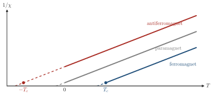
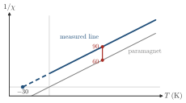

Advanced Quantum Materials 2027 · All lectures · Lecture notes
Session 9. Excitations and Defects in Quantum Materials
9.2 The response of a classical magnet as a first example
Before we use any quantum many-body method, let us see how the response predicts the ground state in a setting that we can solve in closed form. This setting is a classical Ising magnet at finite temperature, treated in mean-field theory, and Section 1.12 gives the mean-field method itself. We take a temperature well above any ordering transition, where the system is disordered. Is there a measurement that we can do at that temperature which tells us what kind of order the system will develop when we cool it down?
The relevant response is the magnetic susceptibility, \(\chi = \partial M/\partial H\), which is the linear-response coefficient that relates an applied field \(H\) to the magnetization \(M\) that it induces. If we solve the mean-field Ising model at high temperature, we find three different behaviors, which depend on the sign and the strength of the exchange coupling.
\[\chi(T) \;\propto\; \begin{cases} \dfrac{1}{T} & \text{paramagnet (no exchange coupling), diverges only at } T=0, \\[4pt] \dfrac{1}{T - T_c} & \text{ferromagnet, diverges at a positive } T_c, \\[4pt] \dfrac{1}{T + T_c} & \text{antiferromagnet, apparent divergence at a negative temperature.} \end{cases} \tag{9.1}\]

The physical picture behind (9.1) is important, because we will find it again in a fully quantum form in Section 9.5. In the paramagnetic regime the thermal fluctuations dominate, and the susceptibility stays finite at any \(T>0\), since nothing in the system tends to order. In the ferromagnetic case the fluctuations reinforce the applied field, so as \(T\to T_c^+\) the system becomes polarized more and more easily, and \(\chi\) really diverges at the transition. In the antiferromagnetic case the fluctuations oppose the applied field, since they favor staggered order and not uniform order, and this appears as the opposite sign in the denominator. The susceptibility then seems to go towards a divergence at a temperature below absolute zero. Of course it never reaches it, but the sign alone already tells us that the system tends to antiferromagnetic order and not to ferromagnetic order. In experiments this is a practical diagnostic. We plot \(\chi^{-1}(T)\), and if the straight line extrapolates to a positive intercept, the system is close to a ferromagnet, while a negative intercept means that the system is close to an antiferromagnet. All of this is measured in the disordered phase at high temperature. This is the model for the whole session. The response of the disordered and uniform state, computed without ever solving for the ordered state itself, already contains the information about which ordered state is coming.
We measure the susceptibility of a magnet at high temperature. A plot of \(1/\chi\) against \(T\) is a straight line that reaches zero at \(T=-30\) K when we extrapolate it. What do we expect when we cool the sample?

Show the answers
- A. ✗ False
This is false. For a ferromagnet with \(T_c=+30\) K the line \(1/\chi\propto T-30\) reaches zero at \(30\) K, and \(\chi\) diverges there. Our line reaches zero only at \(-30\) K, so it never does at a positive temperature.
- B. ✓ True
This is true. The line \(1/\chi\propto T+30\) has the antiferromagnetic form of (9.1). The exchange favors staggered order, which the uniform \(\chi\) does not feel, so it does not diverge for \(T>0\).
- C. ✗ False
This is false. A paramagnet has \(1/\chi\propto T\), which is \(60\) at \(T=60\) K. Our line gives \(90\) there, so the intercept at \(-30\) K is a measured deviation and it signals a finite exchange.